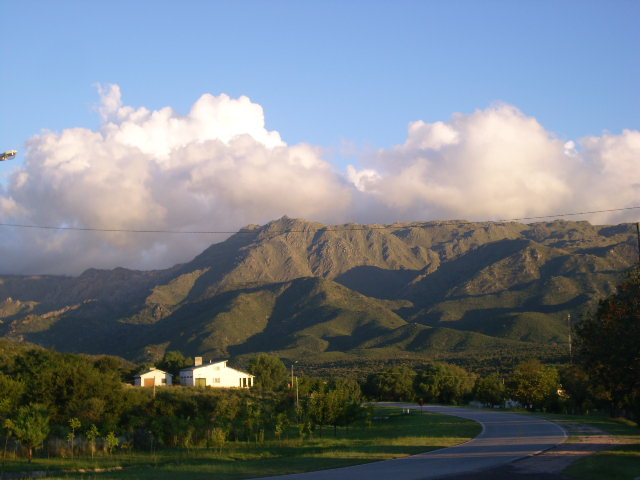
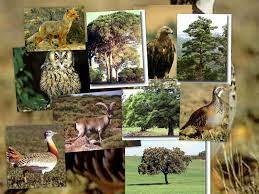

San Luìs, oficialmente Provincia de San Luis (tal y como figura en su Constitución Provincial), es una de las 23 provincias que integran la República Argentina. A su vez, es uno de los 24 estados autogobernados o jurisdicciones de primer orden6 que conforman el país, y uno de los 24 distritos electorales legislativos nacionales.78 Su capital y ciudad más poblada es la homónima San Luis. Está ubicada al sureste de la región del Nuevo Cuyo, al oeste del país, limitando al norte con La Rioja, al este con Córdoba, al sureste y sur con la Provincia de La Pampa, al oeste con el río Desaguadero que la separa de Mendoza, y al noroeste con San Juan.
El poblamiento de la actual provincia de San Luìs comenzó mucho antes que arribaran los conquistadores españoles; incluso anterior a que las poblaciones aborígenes de michilingües, calchaquíes y ranqueles la convirtieran en territorio propio. Petroglifos y pictografías halladas en la gruta de Intihuasi hablan de una presencia humana anterior a los 6.000 años a.c. Desde el descubrimiento mismo de América, los indígenas fueron dominados por los recién llegados, debiéndoles servir y brindar riquezas. Virreyes, capitanes generales, gobernadores y audiencias no sólo cumplían funciones de gobierno sino que fueron instrumentos de sometimiento y enajenación de riquezas del suelo.
En la época de la conquista española habían grandes grupos de aborígenes en la región de la hoy provincia de San Luis: Huarpes, Comechingones (moradores de las cavernas), Olongastas y Pampas, Michilingües (pobladores de los valles), Calchaquíes y Ranqueles. Los primeros españoles llegaron a este territorio atraídos por los bosques de caldén, quebracho y algarrobo y la fauna rica en guanacos, venados y avestruces. Además había allí un gran potencial de mano de obra indígena, como en muchas otras regiones de América, para iniciar la colonización y explotación de las tierras.
Los Huarpes ocuparon territorios de las tres provincias cuyanas y son descendientes raciales de los Huárpidos, a cuyas características físicas respondían y cuyo tipo de cultura heredaron. Sin embargo, estuvieron más tarde sometidos a las influencias de los pueblos andinos, bajo las cuales se fue modificando y enriqueciéndose su cultura. Los Huarpes desaparecieron definitivamente a mediados del Siglo XVIII, y su desaparición se debió, entre otras causas, a la falta de defensa contra las enfermedades traídas por los europeos; el sistema de encomiendas impuesto por los españoles y por el cual enviaban a los indígenas cuyanos a trabajar a Chile; los malos tratos, que los encomenderos daban a los indios; el mestizaje, etc.
Los sanavirones llamaron comechingones a sus vecinos del sur, es decir, a los indígenas que entre otras zonas, habitaban en el área de Conlara, en la provincia de San Luis. Estos aborígenes cultivaban el suelo, eran cazadores y recolectores. La familia constituía la base del ordenamiento, por encima de la familia estaba la parcialidad, que ocupaba un área delimitada; las parcialidades tenían un cacique y cuando crecían mucho se desintegraban en unidades menores con un cacique propio, sin romper los vínculos de la parcialidad matriz.
Muy poco quedó en San Luis de las antiguas culturas. De los Michilingües nos quedó una leyenda: La historia de Juana Koslay, hija de un cacique de caciques que se casó con un oficial español y se dedicó a la enseñanza de los niños de su época. Aunque se ha perdido su acta fundacional, se cree que su capital fue fundada el 25 de agosto de 1594 por Luis Jufré de Loaysa y Meneses, teniente corregidor de Cuyo y dos años después de haber sido abandonada, Martín García Oñez de Loyola, capitán general de Chile, la fundó nuevamente. Entonces la ciudad recibió el nombre de San Luis de Loyola.
El nombre completo de la capital fue "San Luìs de Loyola Nueva Medina de Río Seco". San Luis, porque Luis era el nombre del fundador (Luis Jufré); de Loyola en homenaje al capitán general de Chile, que encargó a Jufré fundar la ciudad; y Nueva Medina de Río Seco, porque el padre del fundador había nacido en Medina de Río Seco, España.
| Departamento | Poblaciòn | Superficie | Densidad |
|---|---|---|---|
| Ayacucho | 18.927 | 9.681 | 1,95 |
| Belgrano | 3.945 | 6.626 | 0,59 |
| Chacabuco | 20.644 | 2.651 | 7,78 |
| Coronel Pringles | 13.082 | 4.484 | 2,91 |
| General Pedernera | 125.470 | 15.057 | 8,33 |
| Gobernador Dupuy | 11.532 | 19.632 | 0,58 |
| Juan Martin de Pueyrrèdon | 204.512 | 13.120 | 15,58 |
| Junìn | 28.808 | 2.476 | 11,63 |
| Libertador general San Martin | 4.668 | 3.021 | 1,54 |
| San Luis | 432.310 | 46.748 | 5,63 |
Presenta dos ambientes bien diferenciados: en la mitad norte predomina el paisaje serrano, en coincidencia con las Sierras Pampeanas, y en la mitad sur, el relieve llano. Las sierras se agrupan en 3 encadenamientos que corren de norte a sur separados entre sí por grandes valles planos. De este a oeste, el 1.º encadenamiento comprende la sierra de Comechingones que hace de límite con Córdoba (en este cordón se encuentra la altura máxima de la provincia, el Cerro de las Ovejas, de 2297 m s. n.m., al cual se accede desde Villa de Merlo), y las Sierras de Tilisarao,y de la Estanzuela, ambas en el Valle de Conlara que las separa del 2.º grupo, el de las Sierras de San Luis. En este cordón se encuentran cerros de origen volcánico como el Cerro Sololasta, Cerro Tomolasta y Cerro Inti Huasi. Finalmente hacia el oeste hay un 3.º grupo de sierras muy erosionadas constituidas por varios cordones: las sierras de Guayaguas, Cantanal, de las Quijadas, Alto Pencoso, del Gigante y la Cerrillada de la Cabra. Entre este grupo de sierras y las de San Luis se forma una depresión relativa ocupada por la Pampa de las Salinas ens u extremo norte y por la Salina del Bebedero en su parte sur. La mitad sur de la provincia se caracteriza por su paisaje plano, confín entre la llanura pampeana hacia el este, con pastos duros y gran cantidad de lagunas donde afloran las napas freáticas; y con las travesías cuyanas hacia el oeste, donde predominan la estepa arbustiva y bosquecillos de caldén con zonas de medanales y casi sin agua.
En la planicie se encuentran también algunas sierras aisladas como el grupo volcánico El Morro, cerro isla ubicado donde el Valle de Conlara se funde con la llanura pampeana; la sierra de Yulto, al sur del mismo; y las sierras del Tala y Varela, prolongación de las Sierras de San Luis.
En general es continental seco con una temperatura media anual de 17 °C, media invernal de 8 °C y estival de 24 °C. Las lluvias disminuyen de este a oeste y se dan principalmente en verano, entre los meses de octubre y marzo. En invierno son casi nulas y pueden llegar a precipitar en forma de nieve a cualquier altura pero sobre todo en las sierras por encima de los 1000 m s. n. m.. En la zona serrana el bioma es árido de sierras y campos, aunque en las laderas orientales de las sierras se desarrolla el bioma templado serrano, más húmedo que el anterior, ya que la falda de la sierra se comporta como frente de condensación para el viento del Atlántico. En la zona de valle de Conlara se da un microclima muy especial, caracterizado por la alta ionización natural negativa del aire, con una alto contenido de ozono con efectos muy benéficos para la salud.
A pesar de la aridez de la geografía de San Luis el catálogo faunístico es sumamente abundante. Entre los mamíferos más conocidos de la zona encontramos pumas, gatos monteses, zorros grises, vizcachas, pecaríes de collar, guanacos y los últimos venados de las pampas (junto con los de la Bahía de Samborombón y del parque nacional Campos del Tuyú en Buenos Aires). La mara o liebre patagónica y el conejo de los palos, también pueden ser vistos. El venado (Ozotoceros bezoarticus), fue muy abundante en otras épocas, hoy escasea por lo que es indispensable la concreción del Proyecto de parque nacional Los Venados, el cual se propone preservar tanto a la especie que le da nombre como al último remanente de pastizales sin arar de las pampas secas.
En la provincia, las aves existen en gran variedad y abundancia de especies de todos los tamaños y colores en las cuales las más características de la zona son los Teros, el Cardenal amarillo y Común, la Reinamora Grande, El Rey del Bosque y las catitas de las sierras, cotorras, entre otras. También pepiteros, monteritas y una gran variedad de pequeñas aves. El elenco avifaunístico se completa con el ñandú, el halconcito gris, las Águilas, el jilguero, el zorzal, las Calandrias, el hornero, el cóndor andino, entre las más famosas de la zona. Se encuentran numerosas aves acuáticas, entre las que se destaca el flamenco común. También están presentes en los espejos de agua el pejerrey, la trucha o la perca criolla y la carpa europea, esta última fue introducida en embalses y afluentes de la zona. Las lagartijas son los reptiles más comunes. Y la boa de las vizcacheras es buscada por su bella piel, aunque ya es rara y está amenazada.
AnfibiosEl perfil económico de la provincia cambió a partir de las políticas de promoción industrial aplicadas desde fines de 1982. Hasta entonces, el sector primario (agricultura y ganadería) era la base productiva.
Los establecimientos industriales que se instalaron luego de ese año, exhiben una gran diversificación y están, principalmente, en dos centros urbanos: la ciudad de San Luis (capital provincial) y Villa Mercedes. En el sector agroindustrial se destacan los frigoríficos y las curtiembres. En los últimos años creció la actividad lechera, la producción de electrodomésticos, plásticos y artículos de papel y cartón. También se desarrolla la industria minera en las sierras de San Luis, del Gigante y de la Estanzuela, ricas en granito y lajas, de donde extraen calizas, basalto y mármol.
El turismo es otra de las actividades impulsadas por el gobierno puntano a partir del retorno de la democracia en 1983. Actualmente la provincia cuenta con la más importante red de autopistas del país, que conecta a la mayoría de las localidades turísticas con la capital provincial.
Cuenta con 169 947 habitantes (Indec, 2010), lo que representa un incremento del 11% frente a los 153 222 habitantes (Indec, 2001) del censo anterior. Forma parte de la aglomeración del Gran San Luis, la cual cuenta con 298 414 habitantes (Indec, 2010).